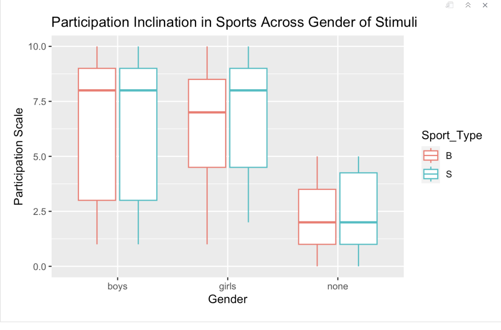

Interest in sports based on gender and the type of picture shown (research design and analysis)
Authors: Anika Arifin, Anaan Choudhury, Aarya Timilsina
Introduction
With sports culture being closely associated with masculinity, many gender minorities do not feel welcomed in sporting spaces. Research supports that exercise and sports, especially organized group sports contribute to better physical and emotional well-being. However, the Women’s Sports Foundation reports that 40% of teen girls are not actively participating in a sport, and adds that boys have 1.3 million more sports opportunities than girls. This divide among genders is problematic and demands a solution to create more equitable opportunities for gender minorities.
Our research question focuses on do non-cis-gendered male individuals feel less interested in sports-related topics depending on what type of sport they see a person playing in stimuli and who they see playing that sport. We hypothesize that participants who view the picture of boys playing sports are more likely to rate unfavorably their interests when it comes to sports-related topics. The reasoning is that they may be more disheartened about being involved in sports as a society typically associates masculinity with sports culture. Whereas, participants who view the picture of the girls playing sports or are shown no picture at all are more likely to rate favorably their interests in sports-related topics. This may be because they feel more empowered so they will have greater interest or do not feel a social pressure to answer the questions in a certain negative manner.
The null hypothesis and alternative hypothesis are as follows:
Null hypothesis \(H_0:\) There is no difference in response from non-cisgendered male individuals to questions for sports-related topics when shown a picture of boys playing soccer, girls playing soccer, boys playing basketball, girls playing basketball, and no picture at all.
Alternative hypothesis \(H_a:\) There is a difference in response from non-cis-gendered male individuals to questions for sports-related topics when shown a picture of boys playing soccer, girls playing soccer, boys playing basketball, girls playing basketball, and no picture at all.
Methods
This study seeks to delve into the research question, by showing participants either a picture of boys playing soccer and playing basketball, girls playing soccer and playing basketball, or no picture at all and then having the participant answer questions about how they feel about sports in general, participating, and watching sports. Participants then rate on a scale how they feel after reading these questions from least interested (0) to most interested (10) to record our response variable.
The design of this study has two factors: the sport that is displayed and the gender of the models in the image. The 3 levels for the sports factor are basketball, soccer, or none. The 3 levels for the gender of the model are boy, girl, or none. The visual stimuli were collected from Unsplashed or Adobe photos. To keep the visuals consistent, the photo of boys playing soccer and basketball and the photo of girls playing the two sports contain young kids between the ages of 5-10 years old. Keeping the pictures similar ensures that there are no unaccounted-for differences that could affect the study. The manipulation was delivered right before answering the questions related to sports by randomly assigning one type of picture of either boys playing soccer and basketball, girls playing soccer and basketball, or no picture. Participants then answered three questions: How interested are you in sports-related topics? How interested are you in participating in sports? How interested are you in watching sports? The participants then rated how they felt about each question from least interested (0) to most interested (10). The factors are cross-listed and there is blocking since each timeslot responded to both sports. Our experimental units were individual timeslots or survey responses from the SDS 290 class. Our response units are the numerical value participants recorded on a scale of 0 to 10 in response to questions.
Results
Descriptive Statistics and Preliminary Boxplots
Before making any assumptions and conducting any modeling, Exploratory Data Analysis will help give insight into the data that was collected. The box plots and descriptive statistics for the response to the three different questions is listed below.
Interest Response
The first box plot and descriptive statistics corresponds to the question: “How Interested Are You In Sports Related Topics?”

From the data visualization and descriptive statistics in just analyzing basketball and soccer, surprisingly our means are very similar for interest in sports and so are the standard deviations. This could mean that the type of sports respondents saw may not have an an influence in how they rated the question “How Interested Are You In Sports Related Topics?”. Also, from the data visualization and the descriptive statistics for what image respondents saw, the standard deviation is much lower for the no visual stimuli when asked about interest in sports in compared to seeing images of boys or girls. It’s also interesting to see a higher mean value for girls stimuli compared to boys stimuli and no image. This could mean that seeing a picture of girls playing sports make respondents more inclined to rate their interest greater. Overall, when respondents saw the specific combination of factors for girls playing basketball, there was a higher mean compared to the other combinations which also very interesting to observe.
Participate Response
The next box plot and descriptive statistics corresponds to the question: “How Interested Are You In Participating In Sports?”
From the data visualization and descriptive statistics in just analyzing basketball and soccer, our standard deviations are almost exactly the same for participation for both sports and the means are similar as well. This again could mean that the type of sports respondents saw may not have an an influence in how they rated the question “How Interested Are You In Participating In Sports?”. Also, from the data visualization and the descriptive statistics for what image respondents saw, the standard deviations and the mean for participation scores are surprisingly similar when shown boy and girl stimuli. But it’s not surprising to see that the mean and standard deviation for no stimuli is the lowest among the gender variable.This could mean that seeing no image makes respondents more inclined to rate their participation lower because there is no visual stimuli to see. Overall, when respondents saw the specific combination of factors for girls playing soccer, there was a higher mean compared to the other combinations which also very interesting to observe.
Watch
The next box plot and descriptive statistics corresponds to the question: “How interested are you in watching sports?”
From the data visualization and descriptive statistics in just analyzing basketball and soccer, our standard deviations are almost exactly the same for watching for both sports and the means are similar as well. This again could mean that the type of sports respondents saw may not have an an influence in how they rated the question “How Interested Are You In Watching Sports?”. Also, from the data visualization and the descriptive statistics for what image respondents saw, the means again are similar for boys and girls stimuli with no stimuli have the smallest standard deviation but the boys standard deviation is a close second. Overall, when respondents saw the specific combination of factors for girls playing basketball, there was a higher mean compared to the other combinations which also very interesting to observe.
Checking ANOVA Conditions and ANOVA
Now that exploratory data analysis has been conducted, further ANOVA models can be applied for the response variables. The process for ANOVA starts by checking the ANOVA conditions. The following conditions must be met: constant effects, additive effects, same standard deviation, independent residuals, normally distributed residuals, and zero mean residuals. After these conditions are tested, ANOVA modeling can happen.
R-squared for Interest
[1] 0.9911813The R-squared is 0.9911813 which means about 99.11% of the variation in the numerical interest rating of being interested in sports related topics is explained by the variance in the different stimuli shown.
Checking ANOVA Conditions and ANOVA: How Interested Are You In Participating In Sports?
For constant effects, we can assume that every survey response was recorded in a similar condition and affected exactly the same.
For additive effects, we can check this through anscombe plots.
Because our lines on the anscombe plot are parallel we can see that additive effects are accounted for for interest.
The standard deviations are investigated below to check if they are similar.
# A tibble: 1 × 1
`max(sd)/min(sd)`
1 1.93 Our standard deviations across the response questions have similar enough standard deviations since the smallest and largest standard deviations are within two orders of magnitude of each other. Our similar standard deviations condition is met for ANOVA.
Our I condition of independence is met since we can rightly assume that the values do not depend or effect each other. Next check the N and Z conditions:
The residuals are centered around zero, and the QQ-residuals plot also almost falls on the straight line with somed deviation so the N and Z conditions are met.
Now ANOVA can be run:
Error: ResponseId
Df Sum Sq Mean Sq F value Pr(>F)
Gender 2 154.5 77.24 4.432 0.0263 *
Residuals 19 331.2 17.43
---
Signif. codes: 0 '***' 0.001 '**' 0.01 '*' 0.05 '.' 0.1 ' ' 1
Error: Within
Df Sum Sq Mean Sq F value Pr(>F)
Sport_Type 1 0.364 0.3636 2.097 0.164
Sport_Type:Gender 2 0.342 0.1709 0.985 0.392
Residuals 19 3.295 0.1734 For Gender, p-value>0.01 so we fail to reject null hypothesis. This means Gender effect is not statistically significant at the significance level of 0.01.
For Sports-Type, p-value>0.01 so we fail to reject null hypothesis. This means the Sports-Type effect is not statistically significant.
For interaction between Sports-Type and Gender, p-value>0.01 so we fail to reject null hypothesis. This means the interaction effect is not statistically significant.
R-squared for Participate
[1] 0.9932714The R-squared is 0.9932714 which means about 99.93% of the variation in the numerical interest rating of participating in sports is explained by the variance in the different stimuli shown.
Checking ANOVA Conditions and ANOVA: How Interested Are You In Watching Sports?
For constant effects, we can assume that every survey response was recorded in a similar condition and affected exactly the same.
For additive effects, we can check this through anscombe plots.
Because our lines on the anscombe plot are parallel we can see that additive effects are accounted for for interest.
The standard deviations are investigated below to check if they are similar.
# A tibble: 1 × 1
`max(sd)/min(sd)`
1 1.40 Our standard deviations across the response questions have similar enough standard deviations since the smallest and largest standard deviations are within two orders of magnitude of each other. Our similar standard deviations condition is met for ANOVA.
Our I condition of independence is met since we can rightly assume that the values do not depend or effect each other. Next check the N and Z conditions:
The residuals are centered around zero, and the QQ-residuals plot also almost falls on the straight line so the N and Z conditions are met (image redacted due to changes in the packages).
Now ANOVA can be run:
Error: ResponseId
Df Sum Sq Mean Sq F value Pr(>F)
Gender 2 30.58 15.29 1.023 0.378
Residuals 19 283.89 14.94
Error: Within
Df Sum Sq Mean Sq F value Pr(>F)
Sport_Type 1 0.205 0.2046 1.008 0.328
Sport_Type:Gender 2 0.438 0.2192 1.080 0.360
Residuals 19 3.857 0.2030 For Gender, p-value>0.01 so we fail to reject null hypothesis. This means Gender effect is not statistically significant at the significance level of 0.01.
For Sports-Type, p-value>0.01 so we fail to reject null hypothesis. This means the Sports-Type effect is not statistically significant.
For interaction between Sports-Type and Gender, p-value>0.01 so we fail to reject null hypothesis. This means the interaction effect is not statistically significant.
Since there is no statistically significant results R squared can just be calculated for the question: How Interested Are You In Watching Sports?
Error: ResponseId
Df Sum Sq Mean Sq F value Pr(>F)
Gender 2 30.58 15.29 1.023 0.378
Residuals 19 283.89 14.94
Error: Within
Df Sum Sq Mean Sq F value Pr(>F)
Sport_Type 1 0.205 0.2046 1.008 0.328
Sport_Type:Gender 2 0.438 0.2192 1.080 0.360
Residuals 19 3.857 0.2030 R-squared for Watch
[1] 0.987908The R-squared is 0.987908 which means about 98.79% of the variation in the numerical interest rating of watching sports is explained by the variance in the different stimuli shown.
Conclusion
There were no statistically significant differences between soccer and basketball when respondents were asked to rank their interest in sports, inclination to watch, and inclination to participate in sports. Furthermore, there were no statistically significant differences when respondents were shown girls, boys, or no visual stimuli and then asked to rank interest in sports, inclination to watch, and inclination to participate in the sports. This means we fail to reject our null hypothesis \(H_0:\) There is no difference in response from non-cisgendered male individuals to questions for sports-related topics when shown a picture of boys playing soccer, girls playing soccer, boys playing basketball, girls playing basketball, and no picture at all. Our hypothesis that participants who view the picture of boys playing sports are more likely to rate unfavorably their interests when it comes to sports-related topics was incorrect. Despite the fact that our models have a high correlation, it does not relate to p-value and significance.
This research does not imply a causal link between gender identity and interest in participating in or watching sports.
This study’s limitations include the wording of the questions, which could lead to misunderstandings. To improve precision, we could clarify or ask more questions about respondents’ general interest, inclination to participate, and inclination to watch the sport, considering that “watching” could mean attending a game in person or streaming. Additionally, the age of the characters in the stimuli may have influenced responses, especially among the 18-24 age group. Therefore, displaying a diverse range of age groups in the survey images could introduce another factor to consider. The model can be improved by increasing the sample size to reduce the effects of outliers and smaller margins of error. Expression of more variety in genders in the visual stimuli would broaden the scope of the study.
For future studies into this topic, increasing the variety of stimuli and being more precise in the wording of our questions would be essential to more accurate findings. Additionally, looking into the past of timeslots could help find a trend in interest in sports. Because we’re interested in sports activity and participation across all genders and all ages, recording whether our survey takers had the financial resources for sports participation at a young age could impact whether they are interested in sports at an older age. Future research questions could include looking at which zip codes in the United States have the least sports participation by non-cis-gendered males. Additionally, there could be a trend analysis over the years and prediction of sports participation by looking at other factors such as average income level, race, average education level of a citizen in the zip code, and more.
Sports enhance psychological and social health outcomes for all participants. By closing the participation gap between genders, opportunities can create new experiences and better health outcomes for all regardless of gender identity.